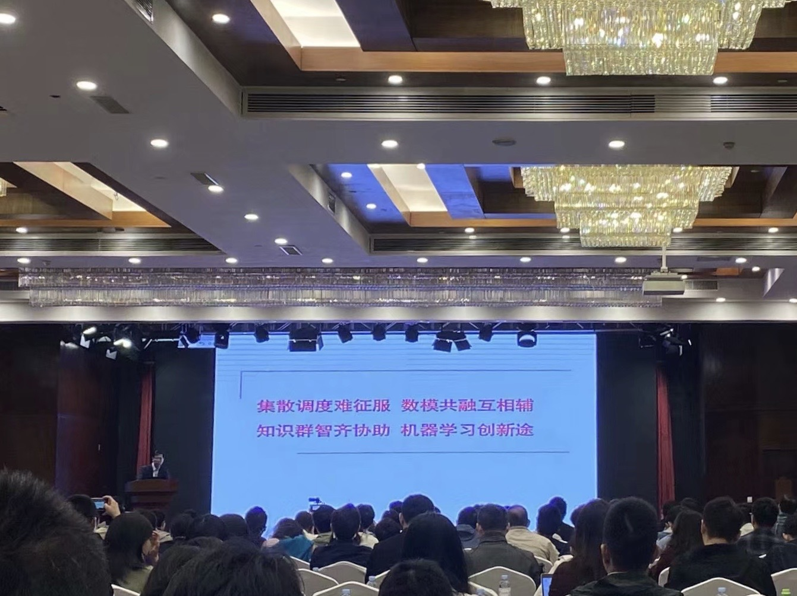

2020-10-24

第三届智能优化与调度学术会议
会议流程
2020 年10月23日，中国仿真学会智能仿真优化与调度专委会委员代表大会在广西举行，会议在王凌教授的主持下顺利召开，主办单位为民族大学和广西人工智能学会。大会报告分为六部分，分别是来自中国矿业大学的巩敦卫教授报告的《代理模型引导的并行程序测试数据进化生成》，来自厦门大学的张德富教授报告的《智慧农业优化及应用》，来自北京航空航天大学的陶飞教授报告的《数字孪生：所研、所实、所问》，来自西安电子科技大学的杨淑媛教授报告的《复杂影像目标感知与解释》，来自北京理工大学的辛斌教授的《面向复杂任务的异构多无人平台空面协同》，来自清华大学王凌教授的《分布式生产调度的协同群智能优化》。
报告简介
王凌教授是清华大学自动化系长聘教授、博士生导师、学位委员会副主席，国家杰出青年科学基金获得者。现担任中国仿真学会只能仿真优化与调度真专委会副主任、中国自动化学会控制理论专委会委员等，主要从事基于计算智能的优化调度理论方法与应用研究， 已主持国家自然科学基金、国家重点研发计划课题等项目20余项。
王凌教授报告题目为：分布式生产调度的协同群智能优化，报告阐述了分布式生产调度研究的背景与意义，分析分布式生产调度的研究现状， 尤其是存在的问题，提出分布式生产调度的关键演变就内容与研究反感，介绍代表性的研究成果，促进分布式调度与群体智能的研究，推动相关学科的交叉融合与发展。
来自中国矿业大学的巩敦卫教授报告题目为：带理模型引导的并行程序测试进化生成，报告介绍了并行程序是通过多个进程交互实现复杂计算任务的程序， 该程序通常包含大量路径，其路径覆盖测试非常具有挑战性。将路径覆盖测试数据生成问题转化为优化问题并采用进化优化求解，是生成测试数据的可行途径。 但是，测试数据性能评价需要频繁运行程序，是的所需的计算耗时急剧增多。报告从带理模型引入的必要性、带理模型的构建、应用与更新等方面， 介绍我们新近提出的代理模型引导的并行程序路径覆盖测试数据进化生成方法。最后，指出我们准备进一步研究的问题。
最后，由王凌教授赋诗一首结束了此次的会议，“集散调度难征服，数模共融互相辅，知识群智齐协助，机器学习创新途”。

参加此次会议的团队成员有： 李俊青老师、于辉、耿雅典、亓瑞、金辉、牛唯、曾清清